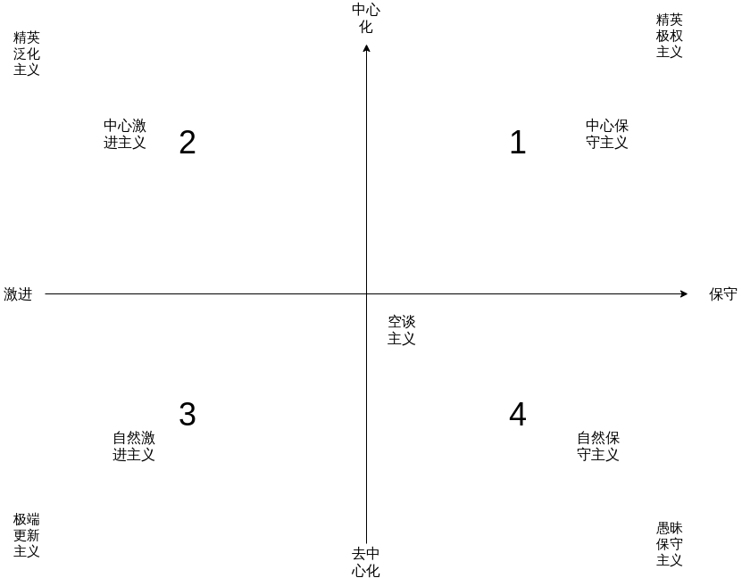

关于政治行动论的修正
文章目录
在这里我们重新确立一下标准，并重新订立一下我们所要讨论的目标。我们要讨论的是行为，而不是理论。当然，我们不希望孤立的讨论行为，因为这会让我们的讨论变得空泛，但在此之前，我们只谈论行为确保我们讨论的纯粹性。
横轴：激进 VS 保守
我们仍然保留了我们横轴上的选择，我们进一步阐释我们的内容。
激进意味着会采取更激烈地、更具破坏性地方式完成政治行动，其政治目的往往是为了颠覆现有秩序。如果不能体现出对现有秩序的颠覆性需求，就要到保守的维度了，如果手段更激烈则更往横轴向左靠近。
保守意味着维持现状，希望通过现有的手段保留过去好的秩序，其政治目的往往是为了维护现有秩序。值得一提的是，保守并不意味着不采取激烈手段，保守之中手段越激烈就越靠右。
纵轴：中心化 VS 去中心化
我们放弃了精英和非精英的划分，因为它不能把权威的问题囊括进来，因此我选择了中心与去中心。
中心强调政治行动围绕政治中心行动。
去中心意味着政治行动无中心、无控制和广泛自发。
政治行动论光谱图订正版

我们改进了原来各个象限和极点所代表的内容，现在我们简单介绍一下各个象限的内容。
第一象限：中心保守主义
就如同字面上所表示的，很好理解。中心保守主义一般是以少部分精英为代表对整个群体的事务进行统治、决策、执行，位于最左上角的点就是精英极权主义，或者说，就是极权主义。一般的国家主义、民族主义、种族主义、法西斯主义的行动都位于这个象限内。
第二象限：中心激进主义
中心激进主义我考虑了很久，目前大概下的是这样一个定义：以部分精英为领导，对整体进行革新。位于极点的是精英泛化主义，例子是红色高棉，可以说是勃艮第主义了。在这个象限里的一般有共产国际，以及一些有组织的各种革命运动。
第三象限：自然激进主义
传统政治往往是中心化的政治，这样政治行动形式，必然会催生出中心化的政治结构。在人类漫长的历史中，去中心化的政治行动往往是很少见的。只能说，从理论上确实存在这样一个位置。
第三象限我将之命名为自然激进主义，它的极点是极端更新主义。目前来说，符合这个极点的政治行动目前并不存在，所以目前这个极点是无用的，我对它的命名很难说是有效的。自然激进主义一般是民众无意识的愤怒，比如说，并不那么激进的五四运动，激进一些的巴黎公社运动、攻占巴士底狱等等。
第四象限：自然保守主义
去中心化往往也代表着民众潜意识觉醒，这种运动往往是最为持久也最为艰难的。第四象限我命名为自然保守主义，极点是愚昧保守主义。这个极点我考虑了很久，最后敲定这个命名。愚昧保守主义与空谈主义的区别在于，空谈主义的行动是被击穿的，但不代表不会行动，是存在行动的可能的，但愚昧保守主义意味着它彻底不会行动，且是大规模的不行动。愚昧保守主义就是一般民众在前反思状态下采取最多的政治行动。
自然保守主义是一种广泛的保守主义，它不是一种具体的理论，也不是一种具体行动，它就是政治冷淡主义，就是不行动。
其他一些常见的理论对应的行动其所处的位置
我们根据我们新订正的内容重新确定一下与下列理论相关的政治行动的位置：
现代犬儒主义
我一开始想把它归为中心保守主义的，但我发现它的精英主义内容并不是行动上的精英主义，所以应该属于自然保守主义，且没有到极点。
白左
扔到中心保守主义里去。
白左的成分是精英主义 + 新自由主义 + 种族主义，特征很明显。
LGBTQ
从诉求上看是寻求改变现有意识的，并对传统的意识形态造成了冲击。手段上比较相对保守，不激进，位置在纵轴左侧一点。从运动形式看，是去中心化的，且是广泛去中心化的，放在自然激进主义并没有问题。
值得一提的是，这里面扔存在着一些中心化的任务领导着该运动，但即使没有这些领导该运动也会存在，所以整体是去中心化的，但又有一点中心化的内容。
保守主义
中心保守主义 + 自然保守主义，这个范围太宽泛了。
马克思主义
我原来对马克思主义行动的定义太简单又太有问题了。首先，先区分一下苏联和共产国际是两个不同的政治实体，所以不能一概而论，其次各地广泛传播下的泛马克思主义思想行动，最后是西方马克思主义。我们简单分析下，我尽力。
苏联在早期建设的时候走的是中心激进主义，然后到斯大林的时候，成为了精英泛化主义，并有精英极权主义萌发。至于赫鲁晓夫及其之后，就是彻底精英极权主义。这里有个问题，是否可以同时存在激进的政治行动和保守的政治行动呢？我觉得是可以有的，但其中一个为重要，另一个次要。比如斯大林时期，作为维护国家自身的代价，必然会发展出中心保守主义，且由于其自身的力度，必然会转身想精英极权主义。
然后是共产国际，它的位置相对温和，属于中心激进主义，并不属于极点。
然后是马克思的遗产马克思主义思想及其对后世政治行动的影响。其实马克思主义的影响力并不单单局限于那些政治组织那么简单了，它已经成为了一种符号，刻在了现代文化里，它告诉工人，要反抗！它跟原来的马克思主义已经大不相同了。从这个角度来说，泛马克思主义政治行动是自然激进主义。
最后讲一下西方马克思主义。比起传统马克思主义，它们行动少了很多，但仍然维持了争夺国家 Power 的传统。西方马克思主义对于资本主义来说，更像是拴住会叫的狗，我们聆听它的声音，却往往看不到它跑出来。所以我仍然给它一个空谈主义的位置。
安那其主义
传统政治理论几乎都是中心化的，但安那其主义似乎是个例外，或者说，粗看似乎是的。
安那其资本主义没有什么好说的，一堆糟粕。表面上的去中心化，实际上的精英化，从理论到行动都是，中心保守主义不送。
安那其左派就很多了，我们分一下个人安那其主义和集体安那其主义。
个人安那其主义去掉安资的话，我觉得位置处于自然激进主义。
集体安那其主义，理论上看我觉得是属于自然激进主义，但实际行动中往往会围绕一个组织展开，而往往这个组织又要去中心话，但你不能说它完全是中心化的政治行动，所以仍然归类为自然激进主义。
总结
所以又完成了一篇差不多的文章，原来的可以删了(不是)。
其实写这个我的思路往往清楚很多，不拘泥于原有的政治坐标去思考这些东西，去思考这些政治行动为什么会成功，为什么会失败，而不是在立场上吵来吵去。当然，最后还是要回归理论上去的，这个隔日再谈。
文章作者 bigshans
上次更新 2021-05-05